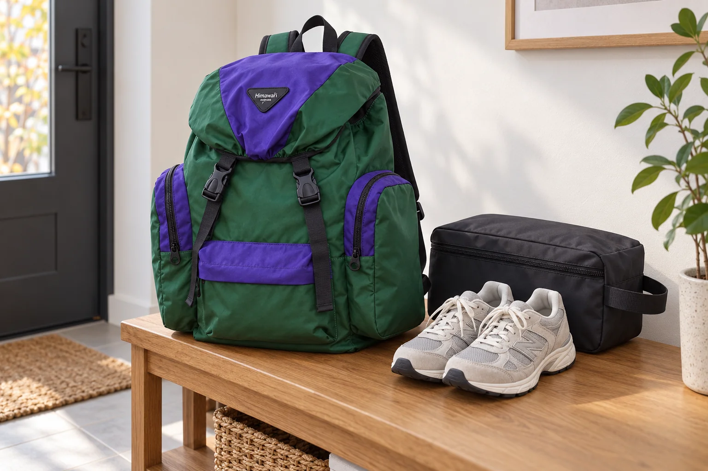

갈아 신을 운동화가 있는 날: 밑창과 평소 짐을 분리하기

하루 중 한 장소에서 신발을 갈아 신어야 한다면, 출발할 때 새 신발을 넣는 일보다 돌아올 때 벗은 신발을 어떻게 가져올지가 더 어려울 수 있습니다. 운동화는 겉면이 깨끗해 보여도 밑창이 다른 물건에 닿고, 끈이 지퍼나 소품에 걸리기 쉽습니다. 백팩의 넓이를 믿고 바로 넣기보다 신발 자체를 한 번 분리해 둔 뒤 평소 짐과 만나는 면을 살펴보세요. 이 글은 특정 가방에 신발이 들어간다고 단정하지 않고, 실제 신발과 보호 주머니를 함께 놓고 확인하는 순서를 다룹니다.
밑창부터 마주 보게 두고 바깥 크기를 재봅니다
두 짝을 바닥에 나란히 놓은 상태보다, 신발주머니에 넣고 닫은 상태가 가방에서 차지하는 부피에 가깝습니다. 밑창이 옷이나 책을 향하지 않도록 두 짝의 방향을 먼저 맞추고 끈 끝은 안쪽으로 넣으세요. 길게 늘어진 끈을 단단히 묶어 압축하기보다 자연스럽게 정리해 원래 신발 형태가 눌리지 않게 합니다. 주머니의 가로·세로·두께를 실제로 확인한 다음 백팩 입구를 지나가는지도 살펴보세요.
깨끗한 물건과 신발주머니 사이에 경계를 만듭니다
가방 안에 서류, 전자기기, 겉옷이 함께 있다면 신발주머니를 그 물건들 위에 억지로 얹지 않는 편이 좋습니다. 물건을 모두 펼쳐 둘 공간이 없다면 평소 소지품은 하나의 닫힌 파우치로 묶고, 신발주머니는 별도 손가방으로 가져가는 선택도 가능합니다. 수납칸이 많아 보인다는 이유만으로 밑창과 깨끗한 물건이 완전히 분리된다고 보기는 어렵습니다. 실제 접촉면과 여닫는 동작을 기준으로 판단하세요.
현장에서는 갈아 신는 순서를 짧게 만듭니다
신발을 바꾸는 장소에 보관함이나 앉을 자리가 있는지는 사전에 확인해야 합니다. 신발주머니의 입구를 쉽게 찾을 수 있는 방향으로 두고, 벗은 신발을 넣기 전에 바닥의 물기나 흙이 묻었는지 확인하세요. 젖거나 오염된 신발은 마른 여벌 신발과 같은 주머니에 바로 맞대지 말고 별도 포장이나 손에 들고 이동할 방법을 정합니다. 사람이 오가는 통로에서 백팩을 길게 열어 두지 않는 것도 작은 배려입니다.
귀가한 뒤에는 신발과 주머니를 먼저 꺼냅니다
다른 소지품부터 정리하다 보면 사용한 신발이 밤새 가방에 남기 쉽습니다. 집에 도착하면 신발주머니를 먼저 꺼내 상태에 맞게 말리고, 가방 안쪽에 흙이나 먼지가 떨어졌는지 확인하세요. 다음번에도 같은 동선을 쓸 계획이라면 신발주머니의 위치만 기억해 두고, 신발 크기가 달라졌을 때는 다시 실제 치수를 비교합니다. 같은 모델의 백팩이라도 담는 물건과 배치에 따라 여유는 달라집니다.
사진은 신발이 들어간다는 증명이 아닙니다
대표 이미지는 실제 Himawari No.1111 그린 제품 원본을 참조해 현관 벤치에 백팩과 신발주머니를 따로 둔 AI 연출입니다. 사진의 신발이나 주머니가 이 백팩에 들어간다고 실측한 결과가 아니며, 실제 고객의 사용 후기 또한 아닙니다. 제품의 외부 크기는 가로 43 × 세로 47 × 폭 24cm로 확인되지만, 내부 여유와 입구 형태는 담을 신발주머니를 직접 재어 비교하세요.
참고·안내
- Himawari No.1111 제품 정보
- 실제 Himawari No.1111 그린 제품을 참조해 백팩과 신발주머니를 따로 놓은 AI 연출입니다. 신발 수납 가능성을 실측한 사진이나 고객 후기가 아닙니다.
자주 묻는 질문
운동화를 꼭 백팩 안에 넣어야 하나요?
그럴 필요는 없습니다. 신발주머니를 닫은 상태의 크기와 가방 입구를 비교해 보고, 평소 짐과 분리하기 어렵다면 별도로 드는 편을 선택하세요.
젖은 운동화를 그대로 넣어도 될까요?
젖거나 흙이 묻은 신발은 다른 물건과 맞닿지 않도록 별도로 다루고, 귀가 후 바로 꺼내 상태에 맞게 말리는 것이 좋습니다.